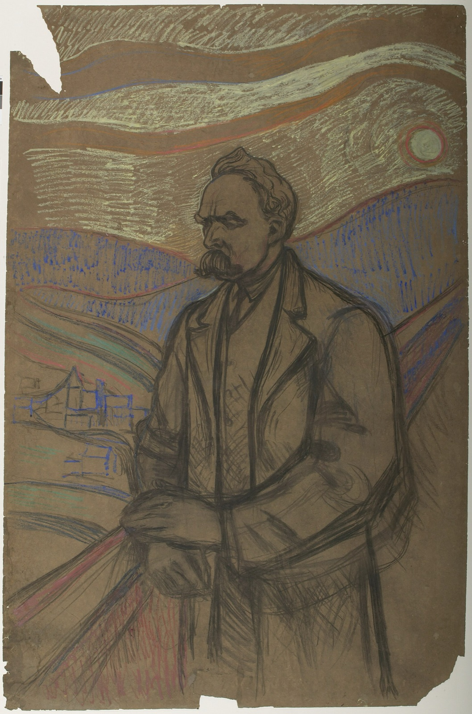

'신은 죽었다'는 무신론 선언일까? — 니체가 정말 하려던 말
"신은 죽었다." — 니체
철학자의 말 가운데 가장 유명한 문장에 듭니다. 사람들은 그 뜻을 대개 한 가지로 읽습니다. 무신론자가 기독교에 던진 도전장이라는 것입니다.
니체가 이 말을 적은 장면은 다릅니다. 그 말을 외치는 사람은 두려움에 떨고 있습니다. 듣는 사람들은 신자가 아니었습니다.
'신은 죽었다'는 소식을 처음 들은 사람들은, 이미 신을 믿지 않던 사람들이었습니다.
이 글은 이 문장을 반기독교 구호로 기억하는 분들을 위해 씁니다. 니체는 기독교를 날카롭게 비판한 사람이 맞습니다. 그러나 '신은 죽었다'는 사람들이 이미 신을 믿지 못하는 시대를 진단한 문장입니다. 철학에서는 이것을 니체의 '신의 죽음(Death of God)'이라고 부릅니다.

대낮에 등불을 든 사람
이 문장이 가장 유명하게 나오는 곳은 1882년 무렵 쓴 『즐거운 학문』의 125절, '미친 사람'이라는 짧은 이야기입니다. 화창한 아침, 한 사람이 등불을 켜 들고 장터로 달려갑니다. 장터에는 신을 믿지 않는 사람들이 많이 서 있었습니다. 그들은 그를 보고 크게 웃습니다[1].
그러자 그 사람이 그들 한가운데로 뛰어들어 말합니다.
신은 어디로 갔느냐? 내가 말해 주마! 우리가 그를 죽였다 — 너희와 내가! … 신은 죽었다! 신은 죽은 채로 있다! 그리고 우리가 그를 죽였다!
— 니체, 『즐거운 학문』 125절, Thomas Common 영역본에서 (번역)[1]
그러고는 자기가 너무 일찍 왔다고, 아직 때가 되지 않았다고 말합니다. 나중에는 이렇게 묻습니다. 이 교회들이 신의 무덤과 비석이 아니면 무엇이냐고[1].
'신은 죽었다'고 외치는 사람은 신자들에게 싸움을 걸지 않습니다. 그가 말을 거는 상대는 무신론자들입니다. 그들은 이미 신을 믿지 않지만 그것이 무슨 일인지 모릅니다. 그는 그들이 저지른 일의 무게를 알리러 왔습니다. 스탠퍼드 철학 백과사전도 같은 대목을 짚습니다. 이 선언의 요점은 무신론이 참이라는 데 있지 않습니다. 125절의 그 사람은 이 말을 한 무리의 무신론자들에게 '새로운 소식'으로 전합니다[2].
죽은 것은 무엇인가
니체는 5년 뒤인 1887년, 이 책의 증보판에 새로 붙인 343절에서 그 뜻을 더 분명히 적었습니다. 최근의 가장 큰 사건은 '신이 죽었다'는 것, 곧 기독교의 신에 대한 믿음이 더는 믿을 만하지 않게 되었다는 것입니다. 그 사건이 이제 막 유럽 위에 첫 그림자를 드리우기 시작했다고 그는 씁니다[1]. 위키백과의 정리도 같습니다. 니체는 초자연적 존재가 죽었다고 주장하지 않으며, 무신론을 하나의 교리로 논증하지도 않는다는 것입니다[3].
그러니 '신이 죽었다'는 말은 '사람들이 더는 신을 믿지 못한다'는 관찰입니다. '신은 없다'는 증명과는 다른 말입니다. 니체가 두려워한 것은 그다음입니다. 343절은 그 믿음 위에 세운 것, 이를테면 유럽의 도덕 전체가 함께 무너질 것이라고 내다봅니다[1]. 스탠퍼드 백과사전은 이 사건에 대한 반응을 '애도와 깊은 방향 상실'이라고 적습니다[2].
'신은 죽었다'는 믿음을 무너뜨리자는 말이 아닙니다. 믿음은 이미 무너졌으니 그 위에 세운 것을 어떻게 할지 생각하라는 경고입니다.
그렇다고 니체가 기독교 편이었던 것은 아니다
그렇다고 니체가 기독교를 옹호한 것은 아닙니다. 니체는 기독교를 날카롭게 비판한 철학자였습니다. 그는 기독교가 도덕에 깔아 둔 심리적·인식적·가치의 토대를 겨냥해 비판을 이어 갔습니다. 말년에 쓴 『안티크리스트』에서는 그 비판을 더 밀고 나갔습니다[2]. 이 책은 그가 쓴 지 몇 해 뒤인 1895년에야 나왔습니다[3].
니체는 반기독교적인 사람이었습니다. 그러나 '신은 죽었다'는 반기독교 구호가 아닙니다. 기독교를 공격하는 일과 기독교가 이미 힘을 잃었다고 진단하는 일은 다릅니다. 이 문장은 진단 쪽입니다.
니체가 처음 한 말도 아니다
'신의 죽음'이라는 표현도 니체가 만든 것이 아닙니다. 독일 문화에서 '신의 죽음'에 관한 이야기는 17세기부터 나옵니다. 요한 폰 리스트의 루터교 찬송가 「슬픈 장례의 노래」에는 '신께서 친히 죽어 누우셨다'는 구절이 있고, 헤겔은 『종교철학 강의』에서 이 찬송가를 인용했습니다. 1854년 프랑스 시인 네르발의 시에도 '신은 죽었다!'가 나옵니다[3].
니체에게서 달라진 것은 뜻의 크기입니다. 그가 말한 신의 죽음은 한 문명이 기대 온 믿음이 무너진 사건이었습니다.
그림자는 오래 남는다
'신은 죽었다'가 『즐거운 학문』에 처음 나오는 곳은 125절이 아니라 그보다 앞선 108절입니다[3]. 니체는 거기서 이렇게 씁니다. 부처가 죽은 뒤에도 사람들은 수백 년 동안 동굴 속에 그의 거대하고 무시무시한 그림자를 보여 주었다. 신은 죽었지만, 사람이 생긴 모양대로라면 그의 그림자를 보여 줄 동굴이 아마 수천 년은 더 있을 것이다[1].
그림자는 믿음이 사라진 뒤에도 남는 습관과 가치입니다. 니체가 본 문제는 사람들이 그 그림자를 여전히 진짜로 여기며 산다는 것이었습니다. 가장 높이 여기던 가치들이 스스로 가치를 잃어 갑니다. 니체 연구자들이 허무주의라 부르는 상태가 여기서 시작됩니다[2]. 니체가 '삶의 긍정'이라는 말로 답하려 한 물음은 그 그림자가 사라진 뒤 무엇에 기대어 살 수 있느냐였습니다[2].
필자 한마디
이 문장을 반기독교 구호로 기억해 온 것은 이상한 일이 아닙니다. 사람들은 짧고 강한 문장을 원래 있던 장면에서 떼어 따로 인용하기 쉽습니다.
"'신은 죽었다'는 부고였습니다." 부고를 전하는 사람은 기뻐하지 않습니다. 등불을 든 그 사람은 신이 사라진 자리에 무엇을 세울지 아무도 묻지 않는 것을 두려워했습니다.
이 문장을 다시 만나면 125절의 장터 장면을 함께 떠올리시기 바랍니다.
'신은 죽었다'는 『즐거운 학문』에서 신을 믿지 않는 장터 사람들에게 두려움 속에 전하는 소식으로 나옵니다. 니체가 말한 신의 죽음은 기독교의 신에 대한 믿음이 더는 믿을 만하지 않게 되었다는 진단입니다. 신이 없다는 증명과는 다릅니다. 니체는 기독교를 날카롭게 비판했습니다. 그러나 이 문장은 믿음이 무너진 뒤를 걱정한 문장입니다.
짧고 강한 명문장을 만나면 원래 있던 장면을 찾아 읽어 보시기 바랍니다.
인용한 니체의 문장은 영어 번역본에서 옮긴 것이라 국역본과 표현이 다를 수 있습니다.